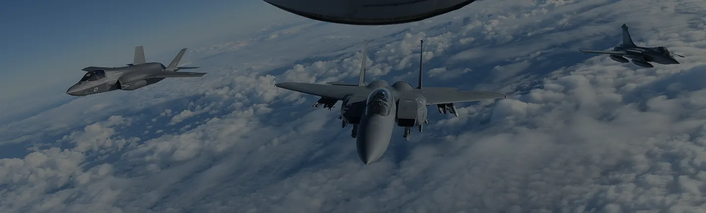
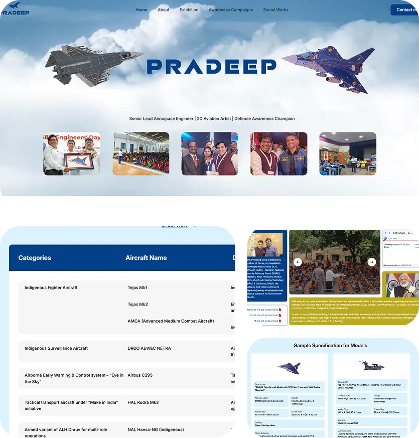
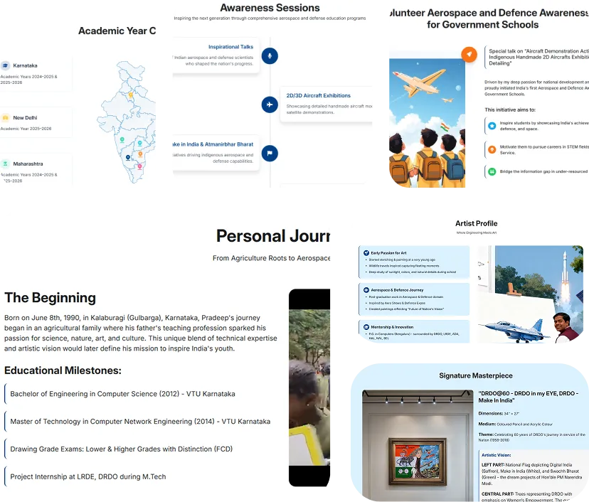

Previous


- UI/UX Design
- Website Design
- Web Development
-
01.
Project Overview
View Website
We designed and developed a marvelous piece of digital art for Mr. Pradeep, a distinguished Senior Lead Aerospace Engineer at Collins Aerospace and former DRDO scientist. Our website solution combines his technical aerospace expertise with his artistic vision through simple yet content-rich design enhanced with meaningful animations that correspond to his mission of inspiring India's youth.
Born on June 8, 1990, in Kalaburagi, Karnataka, Mr. Pradeep leads India's first volunteer-driven aerospace awareness campaign—Igniting Young Minds—which has reached over 23,000 students across Karnataka since 2018. The website showcases his unique blend of aerospace engineering excellence and artistic passion for capturing India's defense and space achievements.
Website Features Delivered:
Personal Journey Showcase - Complete professional and artistic timeline presentation
Igniting Young Minds Campaign - Comprehensive initiative documentation and impact
Aerospace Art Gallery - Professional aviation artwork with electrical effects mastery
Educational Background - Detailed academic and professional milestone presentation
DRDO & Defense Legacy - Indigenous projects like AEW&C and SAR for UAVs coverage
Mentor Acknowledgments - Tribute to India's science and defense visionaries
Simple Yet Rich Design - Clean aesthetics with substantial content depth
Meaningful Animations - Motion graphics aligned with aerospace and artistic themes
The website serves as both professional portfolio and inspirational platform, reflecting Mr. Pradeep's mission to align with Make in India and Atmanirbhar Bharat through youth engagement.
-
02.
Process & Challenge
Design Development Process:
Creating Mr. Pradeep's website required balancing his multifaceted identity as aerospace engineer, defense scientist, aviation artist, and youth inspiration leader while maintaining simple design aesthetics that could accommodate extensive content and meaningful animations.
Key Design Challenges Mastered:

Building brand identity with logo, website, and social media design - Developed sophisticated personal branding that honors his technical aerospace expertise while celebrating his artistic vision and youth mentorship mission across India's defense and space sectors.
Using content and ads to boost brand engagement - Created strategic content presentation that showcases both his professional achievements at Collins Aerospace and DRDO while highlighting the Igniting Young Minds campaign's impact on 23,000+ students.
Start Agenda for any help - Implemented comprehensive contact and engagement systems that support his ongoing mission to inspire youth while providing professional networking capabilities for aerospace industry connections.
Technical Implementation:
The primary challenge was creating simple design that could elegantly present extensive content spanning his engineering career, artistic journey, educational background, and youth inspiration mission without overwhelming visitors.
Animation integration required careful consideration to reflect aerospace themes while honoring his artistic background in aviation art with electrical effects. Each animation needed to enhance storytelling about his journey from Kalaburagi to becoming a senior aerospace engineer and youth mentor.
Content organization demanded strategic information architecture that could showcase his gratitude to India's science visionaries like Dr. A.P.J. Abdul Kalam, Dr. Vikram Sarabhai, and DRDO leaders while maintaining focus on his current mission and future vision.
 -
03.
Summery
The website successfully delivers a marvelous digital art piece that captures Mr. Pradeep's extraordinary journey from agricultural family background to senior aerospace engineering leadership while showcasing his artistic talents and youth inspiration mission through elegant, simple design enhanced with meaningful animations.
Website Achievement:
The platform effectively presents his dual expertise in aerospace engineering and aviation art while documenting the remarkable impact of his Igniting Young Minds campaign, creating inspiration for visitors and supporting his mission to promote India's aerospace achievements.
Delivered Excellence:
A sophisticated personal website featuring comprehensive professional journey documentation, artistic portfolio showcase, educational campaign presentation, simple yet content-rich design, and meaningful aerospace-themed animations - perfectly capturing the essence of Mr. Pradeep's mission to inspire India's youth toward aerospace, defense, and space excellence.